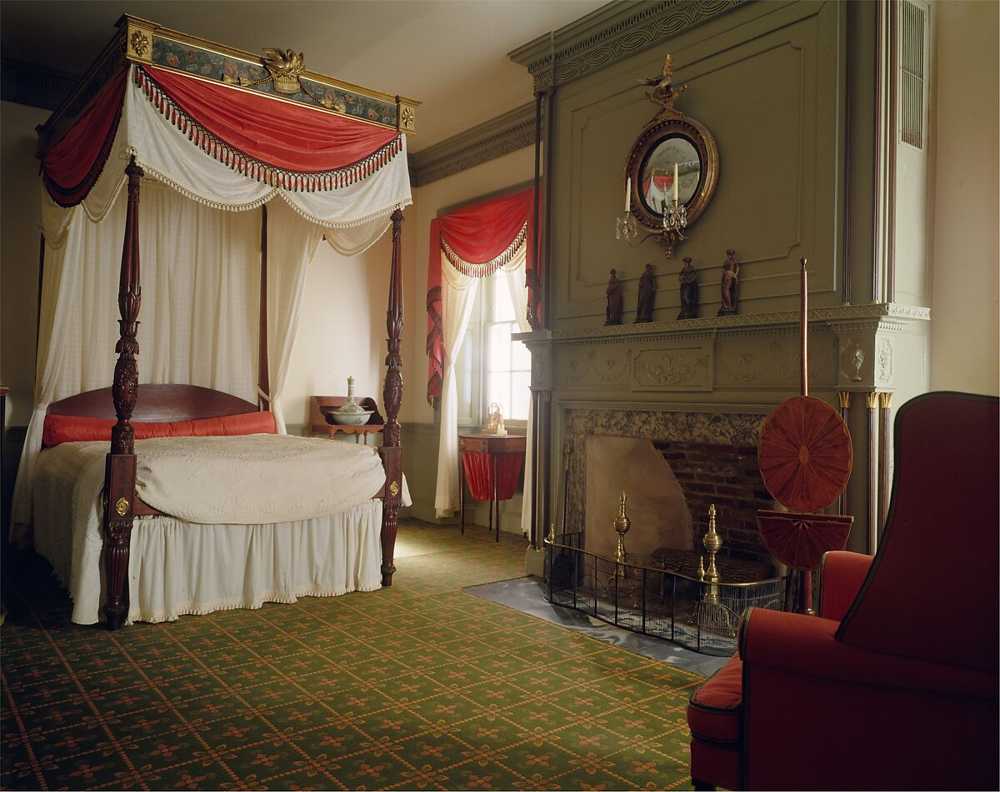
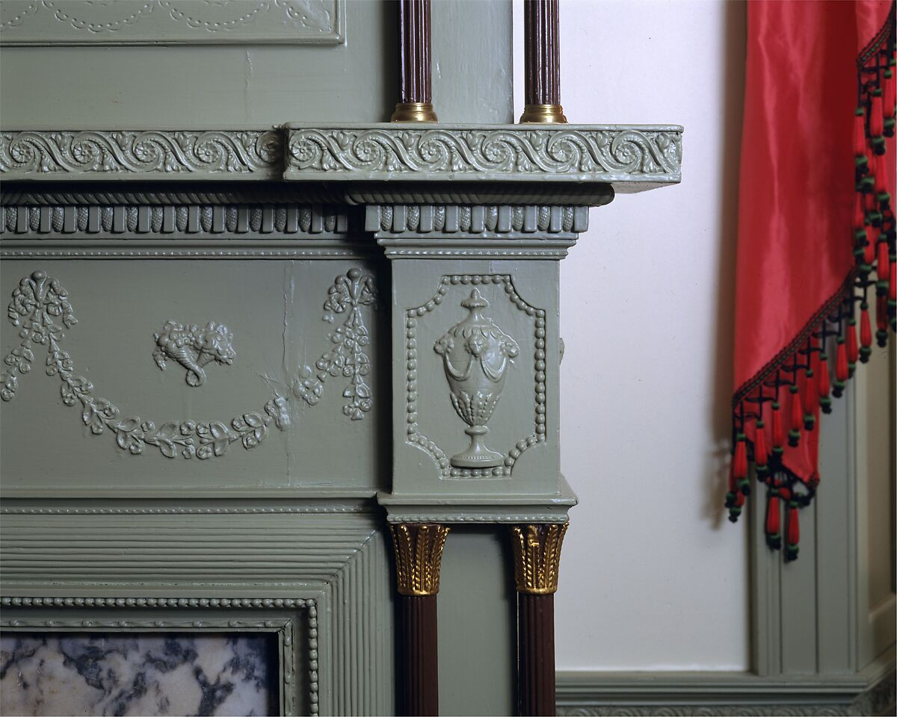
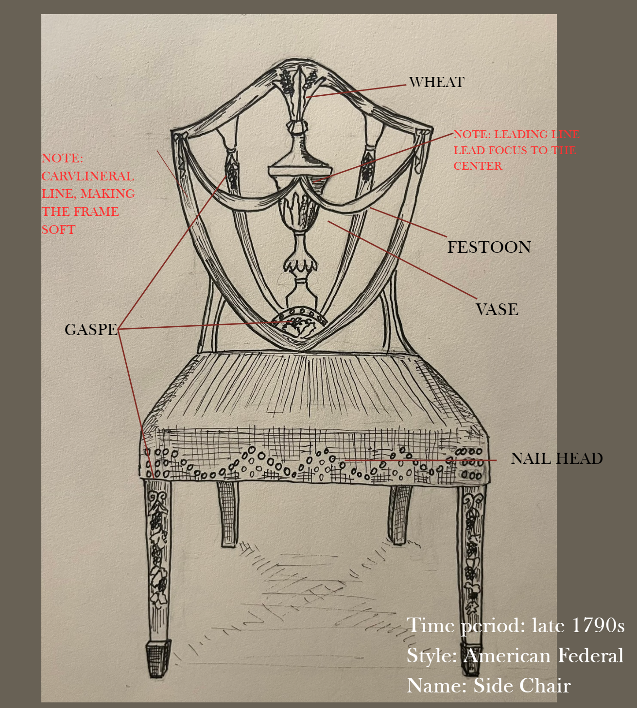
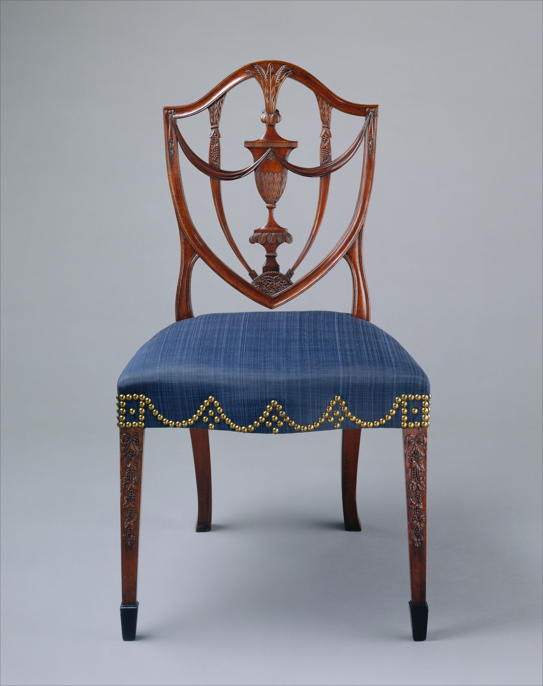
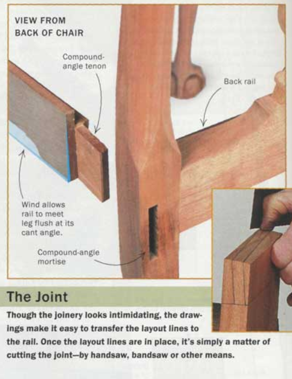
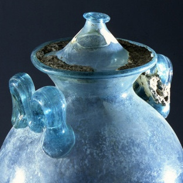
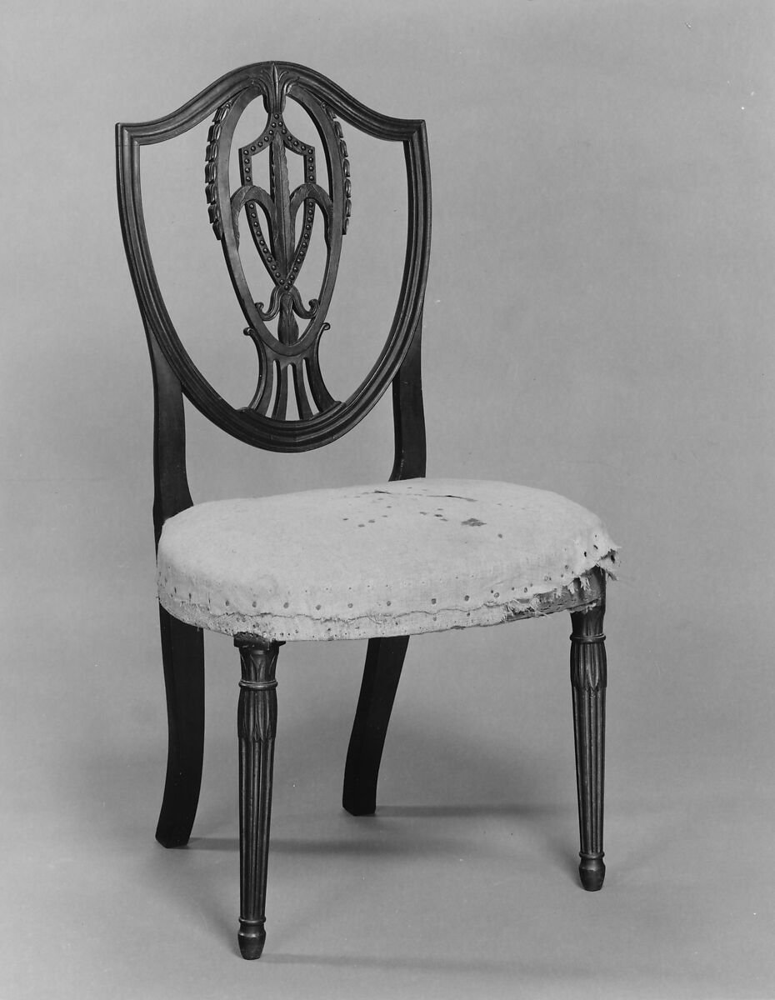

America Federal (1780-1820)
History of Interior and Furniture
Chair research
Jerry Lin
Oct 15, 2026
Chair research
Jerry Lin
Oct 15, 2026


Sketch and Ordinary Picture


General Information
Location
Salem, Massachusetts, United States
Designer's Name
Samuel McIntire
Year of Fabrication
1794-1799
Materials and Motifs
Materials
- Mahogany
- Ebony
- Ash
- Birch
- White Pine
Motifs
- Grapes
- Wheat Sheaf
- Festoon
- Vase
- Shield

Construction Methods
Construction records are limited; According to Boschetto (2026), chairs from this period were mainly joined.
- Cut a projecting end (tenon) on one piece of wood
- Cut a matching socket (mortise) in the other
- Fit them together and secure with glue or a peg
Note: The image shows modern joinery. Hand-cut traditional joints are usually uneven, serving as a clue for identifing original Federal-period chairs from mechine-cut copy copies (Underhill, 2026).

Motifs and Time
- In the mid-18th century, the excavations at Pompeii triggered the neoclassical revolution. European designers extracted inspiration from uncovered artifacts, influencing American designers in the meantime.
- American Federal style shared similar motifs with Ancient Rome, due to the influences from Neoclassicism, while some design language was modified to adopt American values at that time
- For instance, urns refer to ancient Roman funerary vessels, but in Federal design, they meant the timelessness of republican virtue (Underhill, 2026).

Motifs and Time
- American Federal Style emerged with the formation of the USA, so celebrating the development became the theme at that time (Thurlow,2019)
- This chair features several motifs associated with harvest and agriculture, including wheat stalks and grape clusters, reflecting the celebration of harvest
- The grasp pattern may suggest a connection to Salem, where the chair was made, a famous wine-brewing region.
- This chair shows a strong influence from Hepplewhite, inheriting key design elements such as the shield-shaped backrest.

References
- Boschetto, N. (2026, February 13). Federal style The Journal of Antiques and Collectibles. https://journalofantiques.com/glossary/federal-style/
- Britannica Editors. (2012, September 14). Swag. Encyclopedia Britannica. https://www.britannica.com/technology/swag-architecture
- Festoon. (1911). In Encyclopedia Britannica (11th ed., Vol. 10, p. 294). Cambridge University Press. https://archive.org/details/encyclopedia-britannica-volume-14_202405/...
- eptune, W. (2000, August). Compound-angle joinery.N Fine Woodworking， (143), 61. http://woodtools.nov.ru/mag/fww_2000_143/fww_2000_143_61.jpg
- Underhill, Roy. (2026,May). Federal Style Furniture Explained: A Complete Guide https://www.woodworkinghistory.com/federal-style-furniture-explained/
- The Metropolitan Museum of Art. (n.d.). Side chair. THEMET. https://www.metmuseum.org/art/collection
- Thurlow, M. (2009, November 1). American federal-era period rooms. The Metropolitan Museum of Art. THEMET. https://www.metmuseum.org/essays/american-federal-era-period-rooms

Figure Credits
- Figure 1: The Metropolitan Museum of Art. (n.d.). Parlor from the James Duncan Jr. house, Haverhill, Massachusetts. THEMET. https://www.metmuseum.org/art/collection/search/4927
- Figure 2: The Metropolitan Museum of Art. (n.d.). Parlor from the James Duncan Jr. house, Haverhill, Massachusetts. THEMET. https://www.metmuseum.org/art/collection/search/4927
- Figure 3: The Metropolitan Museum of Art. (n.d.). Side Chair. THEMET. https://www.metmuseum.org/art/collection/search/1674
- Figure 4: Holy Cross College. (n.d.). Samuel McIntire. https://college.holycross.edu/faculty/wziobro/ClassicalAmerica/McIntireHP.htm
- Figure 5 Neptune, W. (2000, August). Compound-angle joinery. Fine Woodworking, (143), 61. http://woodtools.nov.ru/mag/fww_2000_143/fww_2000_143_61.jpg
- Figure 6 Western Australian Museum. (n.d.). Daily life in Pompeii. https://museum.wa.gov.au/pompeii2010/daily-life/objects/index.html
- Figure 7 The Metropolitan Museum of Art. (n.d.). Side Chair https://www.metmuseum.org/art/collection/search/826278